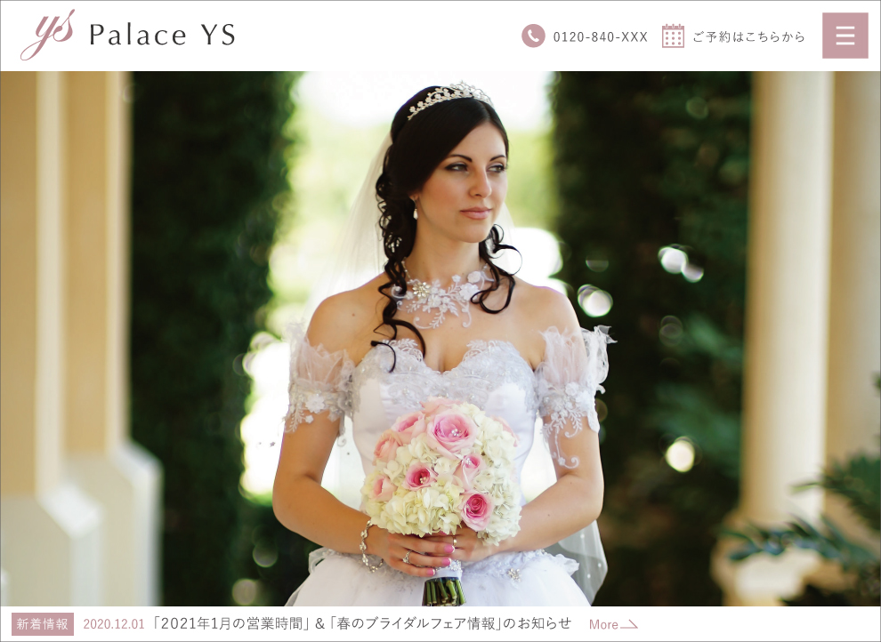
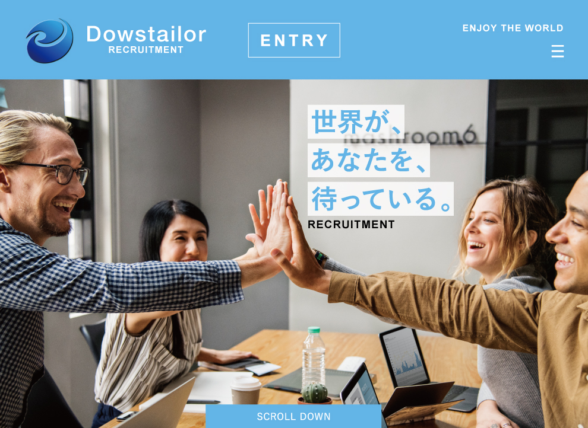

Design
Graphic

G-01神保町 山羊ロックJAPAN ロゴ
山羊肉と音楽を楽しむフェス「神保町 山羊ロックJAPAN」のロゴを制作させていただきました。リーフレットなど各種販促物まで担当させて頂きました。
I created a logo for "Jimbocho Goat Rock Japan", a festival to enjoy goat meat and music. even designed leaflets and various promotional materials.

G-02ならず者の迷宮 ロゴ
ダンジョン探索を目的とするTRPG(テーブルトークRPG) のロゴを制作させていただきました。ルールブックの装丁も担当させて頂きました。
I created a logo for a dungeon-exploring TRPG (Table Talk RPG). I also worked on the binding of the rulebook.
G-Ex01星砕きの彼女とモグラな僕 ロゴ
趣味でライトノベルを執筆しております。ノベルアップ＋にて連載中の拙作のロゴをデザイン致しました。
I write light novels as a hobby. I designed the logo of my novel, which is currently being serialized on Novell Up Plus.
星砕きの彼女とモグラな僕

Design
Web

W-01【架空サイト】株式会社 Palace YS様
オリジナリティの高いブライダルプランを展開されている株式会社 Palace YS様のウェブサイトを制作させていただきました。プランニングからデザイン・コーディングまで担当させて頂きました。
I created a website for Palace YS, a company that offers highly original bridal plans. We handled everything from planning to design and coding.

W-02【架空サイト】株式会社 Dowstailor様
北欧テキスタイルを中心に様々な国から生地を輸入販売されている株式会社 Dowstailor様のエントリーサイトを制作させていただきました。プランニングからデザイン・コーディングまで担当させて頂きました。
I created an entry site for Dowstailor Inc., a company that imports and sells mainly Scandinavian textiles from a variety of countries. We handled everything from planning to design and coding.